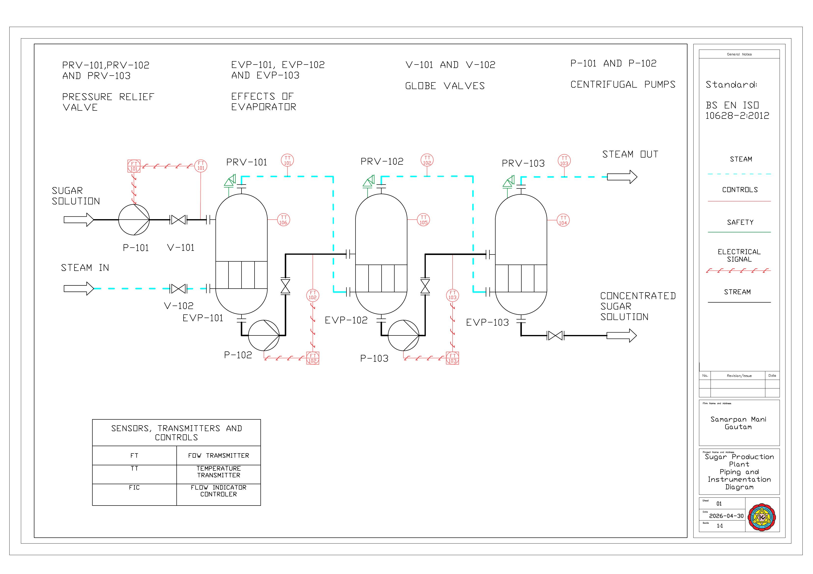

Sugar Plant — P&ID
A three-effect evaporator train for a sugar production plant, drafted to BS EN ISO 10628-2 — pumps, pressure relief valves, and full flow/temperature instrumentation.
View full drawingChemical engineering — process modeling & data science
I'm a final-year chemical engineering student who spends most of my time where mechanistic process models meet machine learning — process simulation in Aspen Plus, CFD in ANSYS Fluent, P&ID and piping design, and satellite-driven environmental data. Currently building a plasma reactor by day and fighting with drift-flux equations by night.
Designing and fabricating a cyclonic plasma reactor, and modeling multiphase flow in ANSYS Fluent where the textbook correlations stop being enough.
Building flowsheets and techno-economics in Aspen Plus, and turning them into P&IDs and piping layouts a fabricator can actually build from.
Fusing MODIS, TROPOMI, and ERA5 with machine learning to estimate air quality in places that don't have a ground station to ask.
Techno-enviro-economic models and hybrid mechanistic–ML surrogates, built to hold up outside the range they were trained on.
"Most models fail quietly at the boundary condition.
I'd rather find that out on paper than in the field."
Selected work

Currently building
A reactor housing that spins wastewater into a vortex and hits it with plasma — an advanced oxidation process built from the ground up. I'm leading the design and fabrication as Vice-President of WEIR Synergy, running CFD in ANSYS Fluent to get the tangential flow and vortex stability right before we validate pollutant degradation on the bench. The reactor housing itself is now a filed and accepted Indian patent.
A three-effect evaporator train for a sugar production plant, drafted to BS EN ISO 10628-2 — pumps, pressure relief valves, and full flow/temperature instrumentation.
View full drawingFull flowsheet simulation with reaction, multi-stage flash separation, heat integration, and a two-column distillation train with recycle and purge.
Coupling a non-equilibrium drift-flux model with ML correction terms to predict gas holdup beyond what classical correlations can reach.
A two-stage ML framework estimating high-resolution PM2.5 across Nepal where ground stations are scarce — presented at SPACECON Nepal.
Modeled hydropower-integration routes for Nepal's cement industry entirely in Aspen Plus — now a published Q1 journal paper, and the kind of process simulation work that later won the Aspen Technology Country Award.
A NAST-funded, sensor-controlled cold storage prototype aimed at cutting post-harvest losses — built, wired, and thermally tested.
Turning calcined banana-ash biomass into a titanium dioxide carrier for targeted drug delivery — biocompatibility, from a fruit peel.
Publications
Poetry
चित्र कोर्ने चित्रकार र उसको रङहरूसँगको सम्बन्ध जस्तै, मेरो अन्तरमनका द्वन्द्वहरूको साथसाथै मेरो अनगिन्ती आत्मप्रतिरूपणहरूको प्रतिबिम्ब मेरो कवितामा झल्किन्छ। मेरो कवितालाई आकार दिने म मात्र होइन — मेरो जीवनमा मसँग जोडिएका पात्रहरू पनि हुन्। यी पात्रहरूको प्रभाव मेरो लेखाइमा मात्र देखिँदैन, मेरो सामान्य पलहरूलाई समीक्षा गर्ने मेरो मानसिक स्थितिमा पनि उत्तिकै झल्किएको छ।
यस जीवनको किताबमा राखिएका कविताहरूले ती पलहरूलाई चित्रण गर्छन् र ती नाजुक विषयहरूसँग जोडिएका भावनाहरूलाई पोख्छन्।
कसैको भावनालाई केही हरफका कविताले पूर्ण रूपमा व्यक्त गर्न सम्भव छैन, तर त्यो भावनाको बोझ केही हल्का पार्न यी कविताहरू एक भारी बिसाउने चौतारी बन्दछन्।
छाएको कालो रंग,
हराउँदै छु म, समाउँदैछु म यहीँ।
लाग्छ, साथी मेरो कालो रात मात्र,
बिहानीको उजेलीले ल्याउँछ उदासीझैँ लाग्छ।
म हिड्छु, म हिड्छु, छैन मेरो कुनै गन्तव्य,
हजारौँ भेट्छु, हजारौँ देख्छु, तर अन्तिममा म एक्लो नै पाउँछु।
एकान्त खोज्छु, कसैको न्यानो अंगालो खोज्छु,
कसैलाई भन्न खोज्छु, तर बाँधिएको महसुस गर्छु।
अन्धकारको पर्खाइमा हुन्छु म, उज्यालो देख्दा डराउँछु म,
जिउँदो लाशझैँ छु म, र संसार चाहिँ मेरो चिहानझैँ छ।
मेरो शरीर थाकेको छ, अनियन्त्रित निन्द्राको वशमा मेरो शरीर छ,
म आज आफैँसँग हारेको छु, र आफ्नै मरणको पर्खाइमा छु।
म हारेको छु।
तिम्रा ती सेता वस्त्रले तिम्रो सिन्दूरझैँ रातो रङ्गले रङ्गिएका पाप ढाक्दैन।
न त तिम्रो धर्मको मुखौटाले तिम्रो कुरूप व्यक्तित्व नै!
तिम्रो अस्तित्व नै कसैको शोक मनाउनुको कारण छ भने, तिम्रो मरण अर्थहीन छ।
हो, म पापी हुँ, म एक तुच्छ प्राणी हुँ।
मलाई मेरो कर्मको अफसोस छैन, र तिमीलाई पनि म निस्खोट देख्दिन।
कहाँ थियौ तिमी, जब मेरो अन्तसकरणदेखि म मदतका लागि रोइरहेको थिएँ?
कहाँ थियौ तिमी, जब मेरो आवाज बन्द कोठामा प्रतिध्वनि भई गुन्जिरहे,
र मेरो रुवाइ शून्यतामा परिणत भइ गए?
कहाँ थियौ तिमी।
तिम्रो याद मेटाउन आज आफ्नो नैतिकतालाई दागबत्ती दिएँ ।
तिम्रो हात छुटाउन आफ्नो देहमा बास छोडिदिएँ ।
मैले जितेको लाडाई आज मेरो हार मानिदिएँ ।
मेरो कर्मलाई तिमी प्रतिको घात सोचिदिएँ ।
मेरो हात र पाउ तिमीसंग हिँडेको बाटो देख्दा दिशा मोडिदिन्छ ।
मेरो बोली कसैलाई तीर झैँ लाग्ला भनी तरकसमा बसिदिन्छ ।
त्यही पनि मेरो मौनताले धेरै शब्द बोलिदिन्छ र मेरो मृत शरीरले भोलिको आशा मारिदिन्छ ।
आज मेरो अँगालोमा छौ तर तिम्रो मन र मस्तिष्क केही अरूसँग गासेको छौ।
यो यात्रा कुनै गन्तव्यबिनाको छ र तिमी र मेरो साथ बिनाअर्थको छ।
के, किन र कसरीको उत्तर मसँग छैन र यस सम्बन्धको अस्तित्व संसारको लागि अनैतिक छ।
हाम्रो कर्मको यातनाले गर्दा कसैको शुद्ध प्रेममाथिको विश्वासको हत्या भएको छ।
हामी दोषी ठहरिएका छौँ र हाम्रो साथलाई विश्वासघातको छाप लगाइएको छ।
आज दोषी, पीडित र प्रहरी एकै जालमा जेलिएको छ र हाम्रो गल्तीको सजाय कोही अरूनै भोग्दै छ।
मेरो बास चिहानमा छ।
आत्मा मेरो साथमा छ।
शरीर मेरो हजारौं छ।
तर लास मेरो गलेको छ।
रात मेरो कालो छ।
र जुन रगतले रंगिएको छ।
अनेक आवाज गुन्जिँदा पनि
संसार मेरो शून्य छ।
मेरो शरीर एक्लो छ।
बन्द बाकसमा राखिएको छ।
ढकढकाउँदा कोहीले खोलिदेला भन्ने मेरो आशा छ।
निसास्सिएर, गुम्सिएर बसेका भावना पोख्न आतुर छ।
मेरा अपूर्ण कार्य पूरा गर्न
मेरा रहर र इच्छा पूरा गर्न अब मेरो कंकाल बाँकी छ।
यो संसारमा म अदृश्य छु।
तर मेरो अस्तित्व अनिष्ठ छ।
मलाई छुडाइदेऊ यो बन्धनदेखि।
यो जालदेखि।
यो अन्धकारदेखि।
यो संसारदेखि।
मृत्युको निम्तो, र जीवनको अवकाश।
अनन्तको सूर्य ग्रहण, त्रासको आभास।
अर्ध जीवित भावना, केवल निराशाको निवास।
निश्चैताको अभाव, देखिने भविष्य राख।
विश्वासको हत्या, अन्यायको सुरुवात।
मरुभूमीको चीत्कार, वर्षाको पर्खाइ।
नर्कको भूमिमा, स्वर्गको लडाई।
Leading the cyclonic plasma reactor project end to end — CFD, fabrication, and experimental validation.
Fourth year, focused on process engineering, reactor design, and environmental data science.
NPR 10,00,000 grant for a sensor-regulated cold storage system to cut post-harvest losses.
Secondary Education Examination (SEE), Grade 10, 2019 — School Leaving Certificate (+2), Grade 12, 2022.
Plus an IoT & robotics teaching stint, earlier academic projects, and full schooling history — all in the PDF.
Simulation & process design
CAD & geospatial
Data & automation
I'm always glad to talk reactors, remote sensing, or anything in between.
Say hello